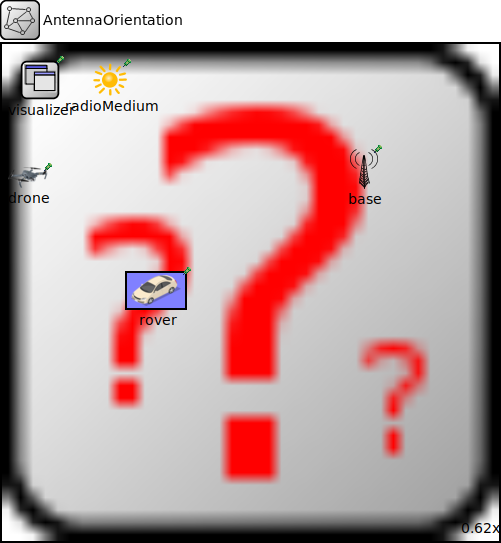

Package: inet.showcases.mobility.combining
AntennaOrientation
network(no description)
Usage diagram
The following diagram shows usage relationships between types. Unresolved types are missing from the diagram.
Parameters
| Name | Type | Default value | Description |
|---|---|---|---|
| minus | string | "-" |
Properties
| Name | Value | Description |
|---|---|---|
| isNetwork | ||
| display | bgb=800,800;bgi=showcases/desert,s |
Unassigned submodule parameters
| Name | Type | Default value | Description |
|---|---|---|---|
| rover.status.initialStatus | string | "UP" |
TODO @signal, @statistic |
| rover.pcapRecorder.verbose | bool | true |
whether to log packets on the module output |
| rover.pcapRecorder.pcapFile | string | "" |
the PCAP file to be written |
| rover.pcapRecorder.fileFormat | string | "pcapng" | |
| rover.pcapRecorder.snaplen | int | 65535 |
maximum number of bytes to record per packet |
| rover.pcapRecorder.dumpBadFrames | bool | true |
enable dump of frames with hasBitError |
| rover.pcapRecorder.moduleNamePatterns | string | "wlan[*] eth[*] ppp[*]" |
space-separated list of sibling module names to listen on |
| rover.pcapRecorder.sendingSignalNames | string | "packetSentToLower" |
space-separated list of outbound packet signals to subscribe to |
| rover.pcapRecorder.receivingSignalNames | string | "packetReceivedFromLower" |
space-separated list of inbound packet signals to subscribe to |
| rover.pcapRecorder.dumpProtocols | string | "ethernetmac ppp ieee80211mac" |
space-separated list of protocol names as defined in the Protocol class |
| rover.pcapRecorder.packetFilter | object | "*" |
which packets are considered, matches all packets by default |
| rover.pcapRecorder.helpers | string | "" |
usable PcapRecorder::IHelper helpers for accept packettype and store/convert packet as specified linktype currently available: "inet::AckingMacToEthernetPcapRecorderHelper" |
| rover.pcapRecorder.alwaysFlush | bool | false |
flush the pcapFile after each write to ensure that all packets are captured in case of a crash |
| rover.pcapRecorder.displayStringTextFormat | string | "rec: %n pks" | |
| rover.interfaceTable.displayAddresses | bool | false |
whether to display IP addresses on links |
| rover.cb.displayStringTextFormat | string | "processed %p pk (%l)" |
determines the text that is written on top of the submodule |
| rover.cb.forwardServiceRegistration | bool | true | |
| rover.cb.forwardProtocolRegistration | bool | true | |
| rover.bl.displayStringTextFormat | string | "processed %p pk (%l)" |
determines the text that is written on top of the submodule |
| rover.bl.forwardServiceRegistration | bool | true | |
| rover.bl.forwardProtocolRegistration | bool | true | |
| rover.li.displayStringTextFormat | string | "processed %p pk (%l)" |
determines the text that is written on top of the submodule |
| rover.li.forwardServiceRegistration | bool | true | |
| rover.li.forwardProtocolRegistration | bool | true | |
| rover.eth.bitrate | double | ||
| rover.nl.displayStringTextFormat | string | "processed %p pk (%l)" |
determines the text that is written on top of the submodule |
| rover.nl.forwardServiceRegistration | bool | true | |
| rover.nl.forwardProtocolRegistration | bool | true | |
| rover.tn.displayStringTextFormat | string | "processed %p pk (%l)" |
determines the text that is written on top of the submodule |
| rover.tn.forwardServiceRegistration | bool | true | |
| rover.tn.forwardProtocolRegistration | bool | true | |
| rover.at.displayStringTextFormat | string | "processed %p pk (%l)" |
determines the text that is written on top of the submodule |
| rover.at.forwardServiceRegistration | bool | true | |
| rover.at.forwardProtocolRegistration | bool | true | |
| radioMedium.neighborCache.refillPeriod | double | ||
| drone.status.initialStatus | string | "UP" |
TODO @signal, @statistic |
| drone.pcapRecorder.verbose | bool | true |
whether to log packets on the module output |
| drone.pcapRecorder.pcapFile | string | "" |
the PCAP file to be written |
| drone.pcapRecorder.fileFormat | string | "pcapng" | |
| drone.pcapRecorder.snaplen | int | 65535 |
maximum number of bytes to record per packet |
| drone.pcapRecorder.dumpBadFrames | bool | true |
enable dump of frames with hasBitError |
| drone.pcapRecorder.moduleNamePatterns | string | "wlan[*] eth[*] ppp[*]" |
space-separated list of sibling module names to listen on |
| drone.pcapRecorder.sendingSignalNames | string | "packetSentToLower" |
space-separated list of outbound packet signals to subscribe to |
| drone.pcapRecorder.receivingSignalNames | string | "packetReceivedFromLower" |
space-separated list of inbound packet signals to subscribe to |
| drone.pcapRecorder.dumpProtocols | string | "ethernetmac ppp ieee80211mac" |
space-separated list of protocol names as defined in the Protocol class |
| drone.pcapRecorder.packetFilter | object | "*" |
which packets are considered, matches all packets by default |
| drone.pcapRecorder.helpers | string | "" |
usable PcapRecorder::IHelper helpers for accept packettype and store/convert packet as specified linktype currently available: "inet::AckingMacToEthernetPcapRecorderHelper" |
| drone.pcapRecorder.alwaysFlush | bool | false |
flush the pcapFile after each write to ensure that all packets are captured in case of a crash |
| drone.pcapRecorder.displayStringTextFormat | string | "rec: %n pks" | |
| drone.interfaceTable.displayAddresses | bool | false |
whether to display IP addresses on links |
| drone.cb.displayStringTextFormat | string | "processed %p pk (%l)" |
determines the text that is written on top of the submodule |
| drone.cb.forwardServiceRegistration | bool | true | |
| drone.cb.forwardProtocolRegistration | bool | true | |
| drone.bl.displayStringTextFormat | string | "processed %p pk (%l)" |
determines the text that is written on top of the submodule |
| drone.bl.forwardServiceRegistration | bool | true | |
| drone.bl.forwardProtocolRegistration | bool | true | |
| drone.li.displayStringTextFormat | string | "processed %p pk (%l)" |
determines the text that is written on top of the submodule |
| drone.li.forwardServiceRegistration | bool | true | |
| drone.li.forwardProtocolRegistration | bool | true | |
| drone.eth.bitrate | double | ||
| drone.nl.displayStringTextFormat | string | "processed %p pk (%l)" |
determines the text that is written on top of the submodule |
| drone.nl.forwardServiceRegistration | bool | true | |
| drone.nl.forwardProtocolRegistration | bool | true | |
| drone.tn.displayStringTextFormat | string | "processed %p pk (%l)" |
determines the text that is written on top of the submodule |
| drone.tn.forwardServiceRegistration | bool | true | |
| drone.tn.forwardProtocolRegistration | bool | true | |
| drone.at.displayStringTextFormat | string | "processed %p pk (%l)" |
determines the text that is written on top of the submodule |
| drone.at.forwardServiceRegistration | bool | true | |
| drone.at.forwardProtocolRegistration | bool | true | |
| base.status.initialStatus | string | "UP" |
TODO @signal, @statistic |
| base.pcapRecorder.verbose | bool | true |
whether to log packets on the module output |
| base.pcapRecorder.pcapFile | string | "" |
the PCAP file to be written |
| base.pcapRecorder.fileFormat | string | "pcapng" | |
| base.pcapRecorder.snaplen | int | 65535 |
maximum number of bytes to record per packet |
| base.pcapRecorder.dumpBadFrames | bool | true |
enable dump of frames with hasBitError |
| base.pcapRecorder.moduleNamePatterns | string | "wlan[*] eth[*] ppp[*]" |
space-separated list of sibling module names to listen on |
| base.pcapRecorder.sendingSignalNames | string | "packetSentToLower" |
space-separated list of outbound packet signals to subscribe to |
| base.pcapRecorder.receivingSignalNames | string | "packetReceivedFromLower" |
space-separated list of inbound packet signals to subscribe to |
| base.pcapRecorder.dumpProtocols | string | "ethernetmac ppp ieee80211mac" |
space-separated list of protocol names as defined in the Protocol class |
| base.pcapRecorder.packetFilter | object | "*" |
which packets are considered, matches all packets by default |
| base.pcapRecorder.helpers | string | "" |
usable PcapRecorder::IHelper helpers for accept packettype and store/convert packet as specified linktype currently available: "inet::AckingMacToEthernetPcapRecorderHelper" |
| base.pcapRecorder.alwaysFlush | bool | false |
flush the pcapFile after each write to ensure that all packets are captured in case of a crash |
| base.pcapRecorder.displayStringTextFormat | string | "rec: %n pks" | |
| base.interfaceTable.displayAddresses | bool | false |
whether to display IP addresses on links |
| base.cb.displayStringTextFormat | string | "processed %p pk (%l)" |
determines the text that is written on top of the submodule |
| base.cb.forwardServiceRegistration | bool | true | |
| base.cb.forwardProtocolRegistration | bool | true | |
| base.bl.displayStringTextFormat | string | "processed %p pk (%l)" |
determines the text that is written on top of the submodule |
| base.bl.forwardServiceRegistration | bool | true | |
| base.bl.forwardProtocolRegistration | bool | true | |
| base.li.displayStringTextFormat | string | "processed %p pk (%l)" |
determines the text that is written on top of the submodule |
| base.li.forwardServiceRegistration | bool | true | |
| base.li.forwardProtocolRegistration | bool | true | |
| base.eth.bitrate | double | ||
| base.nl.displayStringTextFormat | string | "processed %p pk (%l)" |
determines the text that is written on top of the submodule |
| base.nl.forwardServiceRegistration | bool | true | |
| base.nl.forwardProtocolRegistration | bool | true | |
| base.tn.displayStringTextFormat | string | "processed %p pk (%l)" |
determines the text that is written on top of the submodule |
| base.tn.forwardServiceRegistration | bool | true | |
| base.tn.forwardProtocolRegistration | bool | true | |
| base.at.displayStringTextFormat | string | "processed %p pk (%l)" |
determines the text that is written on top of the submodule |
| base.at.forwardServiceRegistration | bool | true | |
| base.at.forwardProtocolRegistration | bool | true |
Source code
network AntennaOrientation { @display("bgb=800,800;bgi=showcases/desert,s"); string minus = default("-"); submodules: rover: StandardHost { @display("p=247.632,395.568;b=100,64,rect,$minus,$minus;i=misc/car3"); } visualizer: IntegratedMultiVisualizer { @display("p=61.104,57.888"); } radioMedium: Ieee80211ScalarRadioMedium { @display("p=173.664,56.28"); } drone: StandardHost { @display("p=43,214;i=misc/drone"); } base: StandardHost { @display("p=582.096,201;i=device/antennatower"); } }File: showcases/mobility/combining/CombiningMobilityShowcase.ned
 This documentation is released under the Creative Commons license
This documentation is released under the Creative Commons license